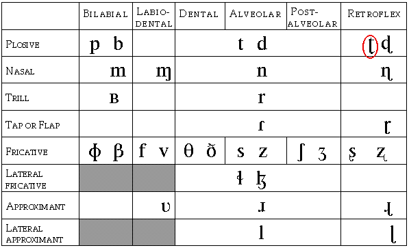
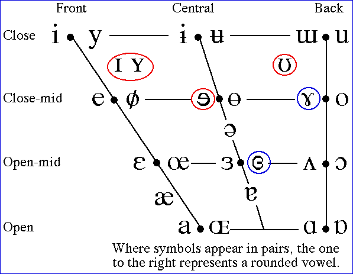

Unfortunately there were some errors in the first printing of the 4th. edition of A Course in Phonetics. On the IPA chart on the inside of the cover page, in the consonant chart, the symbol for a retroflex plosive is wrong, and should be as shown below:

The vowel chart also had a number of errors as shown below: The red circle items were wrong or omitted, the blue circle items were badly shaped.

In Chapter 5, Table 5.5 has been printed with 5 columns instead of four. It should be as follows:
Table 5.5. (1) Optional pre-nuclear pitch accents on stressed syllables (2)Nuclear pitch accents (3)Phrase accents (4)Boundary tones.
| 1 | 2 | 3 | 4 |
| H* | H* | ||
| L* | L* | ||
| L + H* | L + H* | L- | H% |
| L* + H | L* + H | ||
| H + !H* | H + !H* | H- | L% |
| (!H*) | (!H*) |